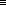

(setq my-name "David") my-name (setq a-variable 57) a-variable (setq a-variable :a-keyword)
(setq my-name "David") my-name (setq a-variable 57) a-variable (setq a-variable :a-keyword)Теперь мы рассмотрим несколько специальных форм и макросов. В течение следующих четырех уроков мы создадим репертуар, который позволит вам писать простые функции, используя самый элементарный тип данных Lisp - список. Более поздние главы будут посвящены более сложным структурам программ и типам данных.
Ранее я уже говорил вам, что Lisp вычисляет форму символа, извлекая его
переменное значение. SETQ дает вам возможность установить
это значение:
"David"
Первый аргумент SETQ - это символ. Он не вычисляется.
Второй аргумент присваивается в качестве значения переменной.
SETQ возвращает значение своего последнего аргумента.
SETQне вычисляет свой первый аргумент, потому что вы хотите присвоить значение самому символу. ЕслиSETQвычисляет свой первый аргумент, то значение этого аргумента должно быть символом. Это делает формаSET. Обратите особое внимание на разницу между формамиSETиSETQв следующем примере и убедитесь, что вы понимаете, что происходит с формой(set var-1 99):Error: Unbound variable
Вы обратили внимание на
'в первой форме? Она(кавычка) удерживает следующую формуvar-2от вычисления. Позже в этом уроке, когда мы рассмотримQUOTE, я объясню ее более подробно.В этом примере мы сначала делаем значением
VAR-1символом(symbol)VAR-2. Проверяя значениеVAR-2, мы обнаруживаем, что он(символ) не имеет никакого значения. Затем мы используемSET(а неSETQ) чтобы присвоить значение99символуVAR-2, который является значением для символаVAR-1.
Форма SETQ фактически может принимать любое четное
число аргументов, которые должны быть чередующимся символами и значениями:
SETQ выполняет присваивания слева направо и возвращает
самое правое значение.
Форма LET выглядит немного сложнее, чем те, которые мы видели
до сих пор. Форма LET использует вложенные списки, но поскольку
это специальная форма, вычисляются только определенные элементы.
(b 4)
(c 5))
(* (+ a b) c))
Приведенная выше форма LET определяет значения для символов
A, B и C, а затем использует их
в качестве переменных в арифметическом вычислении. Результат вычисления
также является и результатом формы LET. Обратите внимание,
что ни одна из переменных, определенных в LET, не имеет
значения после того, как Lisp закончил вычисление формы.
В общем, LET выглядит так:
(let (bindings) forms)
где bindings-это любое количество двухэлементных списков ,
каждый из которых содержит символ и значение , а forms -
любое количество форм Lisp. Формы вычисляются по порядку, используя
значения, установленные привязками. LET возвращает
значение(я), возвращенное последней формой.
Отступ не влияет на работу LET, но правильные отступы улучшает читабельность. Рассмотрим эти эквивалентные формы:
(let ((p 52.8)
(q 35.9)
(r (f 12.07)))
(g 18.3)
(f p)
(f q)
(g r t))
(let ((p 52.8) (q 35.9) (r (f 12.07))) (g 18.3) (f p) (f q) (g r t))
В первом случае отступ делает ясным, какие из элементов являются привязками,
а какие-формами. Даже если читатель не знает о различных ролях, которые играют
две части формы LET, отступ предполагает разницу.
Во втором случае вам придется считать скобки, чтобы узнать,
где заканчиваются привязки и начинаются формы. Еще хуже то,
что отсутствие отступа разрушает визуальные подсказки о
различных ролях, которые играют две части формы LET.
Если вы определяете переменную с помощью SETQ, а затем
используете ту же переменную в форме LET, то значение,
определенное LET, заменяет(затеняет) другое значение во время
вычисления LET:
(+ a 2))
В отличие от SETQ, который присваивает значения в порядке
слева направо, LET связывает переменные все одновременно:
(x w))
(+ w x))
LET привязывает W к 8 и X
к W. Поскольку эти привязки происходили одновременно, W
все еще имел свое первоначальное значение 77.
Лисп имеет вариациюLET, называемуюLET*, которая выполняет привязки по порядку(последовательно):
(u v))
(+ u v))
Макрос COND позволяет вычислять формы Lisp условно.
Как и LET, COND использует круглые скобки для
разграничения различных частей формы. Рассмотрим эти примеры:
(b 2)
(c 1)
(d 1))
(cond ((eql a b) 1)
((eql a c) "First form" 2)
((eql a d) 3)))
В приведенной выше форме COND мы определили три предложения.
Каждое предложение представляет собой список, начинающийся с тестовой формы
сопровождаемой таким количеством форм тела, сколько необходимо. Формы тела -
это просто код, который вы хотите выполнить, если тест пройдет успешно.
Предложения выбираются по порядку - как только один тест проходит успешно,
соответствующие формы тела вычисляются и значение последней формы тела
становится значением формы COND.
CONDявляется более общей, чем специальная формаIF, которая допускает только один тест и по одной форме для частей then и else.
Давайте посмотрим, что произошло в этом примере. EQL возвращает T,
если два его аргумента идентичны или имеют одинаковое число
(есть тонкое различие, которое мы рассмотрим в Главе 17). Только два из трех тестов были выполнены. Первый, (EQL A B), вернул NIL.
Поэтому остальная часть этого предложения (содержащая число 1 как его единственную форму) была пропущена. Вторая проверка (EQL A C), возвращает истину.
Поскольку этот тест возвращает не NIL значение, вычисляется
остальная часть предложения (две атомарные формы, "First form" и
2), и значение последней формы было возвращено как значение
COND, которое затем было возвращено как значение заключающего
LET.
Третье предложение никогда не проверялось, так как более раннее предложение уже было выбрано, а предложения проверяются по порядку.
Обычное использование COND использует T в качестве
тестовой формы в заключительном предложении. Это гарантирует, что формы тела
заключительного предложения будут выполнены, если тесты не пройдут во всех
других предложениях. Вы можете использовать последнее предложение для
возврата значения по умолчанию или выполнения какой-либо соответствующей операции.
Вот вам пример:
(cond ((eql a 13) "An unlucky number")
((eql a 99) "A lucky number")
(t "Nothing special about this number")))
Иногда мы хотели бы подавить нормальные правила вычисления Lisp. Один из таких случаев - когда мы этого хотели бы, чтобы возвращался символ, а не его значение, когда он появляется в качестве аргумента вызова функции:
Разница заключается в том, что в (SETQ A B) используется
значение B, тогда как в (SETQ A (QUOTE B)),
где B обозначает сам себя.
Форма QUOTE настолько часто используется, что Lisp
предоставляет сокращенную нотацию:
(QUOTE form)  'form
Символ означает,
что две формы Lisp эквивалентны. Lisp организует эквивалентность '
и QUOTE через макрос чтения. Мы кратко рассмотрим, как вы
можете определить свои собственные макросы чтения в
Уроке 12.